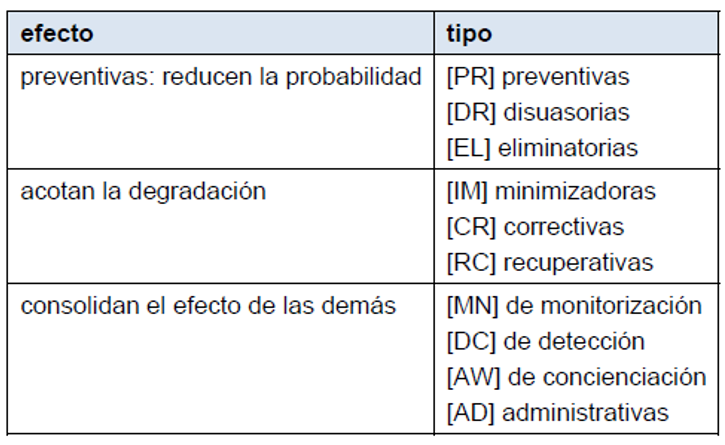

[PR] Prevención: Cuando reduce las oportunidades de que un incidente ocurra.
[DR] Disuasión: Cuando tiene un efecto tal sobre los atacantes que estos no se atreven o se lo piensan dos veces antes de atacar.
[EL] Eliminación: Cuando impide que éste tenga lugar.
[IM] Minimización del impacto / limitación del impacto: Cuando acota las consecuencias de un incidente.
[CR] Corrección: Cuando, habiéndose producido un daño, lo repara.
[RC] Recuperación: Cuando permite regresar al estado anterior al incidente.
[MN] Monitorización: Trabajan monitorizando lo que está ocurriendo o lo que ha ocurrido.
[DC] Detección: Cuando informa de que el ataque está ocurriendo.
[AW] Concienciación: Son las actividades de formación de las personas anexas al sistema que pueden tener una influencia sobre él. La formación reduce los errores de los usuarios, lo cual tiene un efecto preventivo.
[AD] Administración: Se refiere a las salvaguardas relacionadas con los componentes de seguridad del sistema.